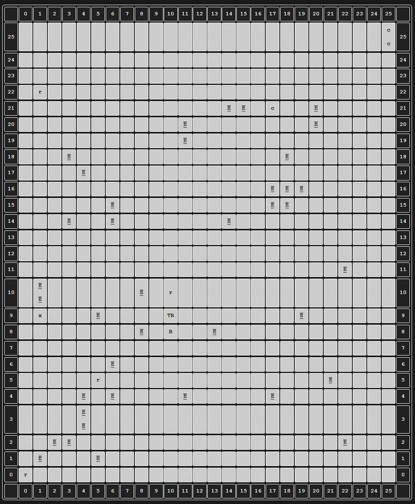
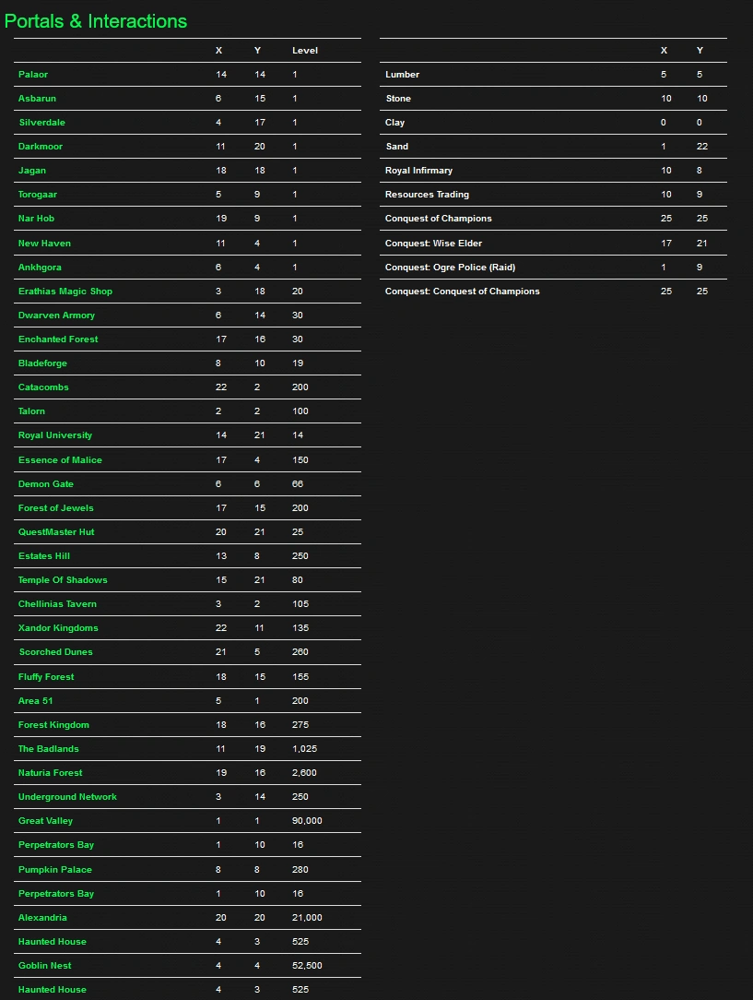
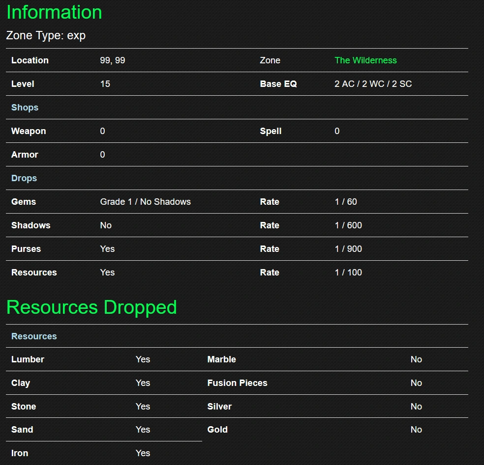
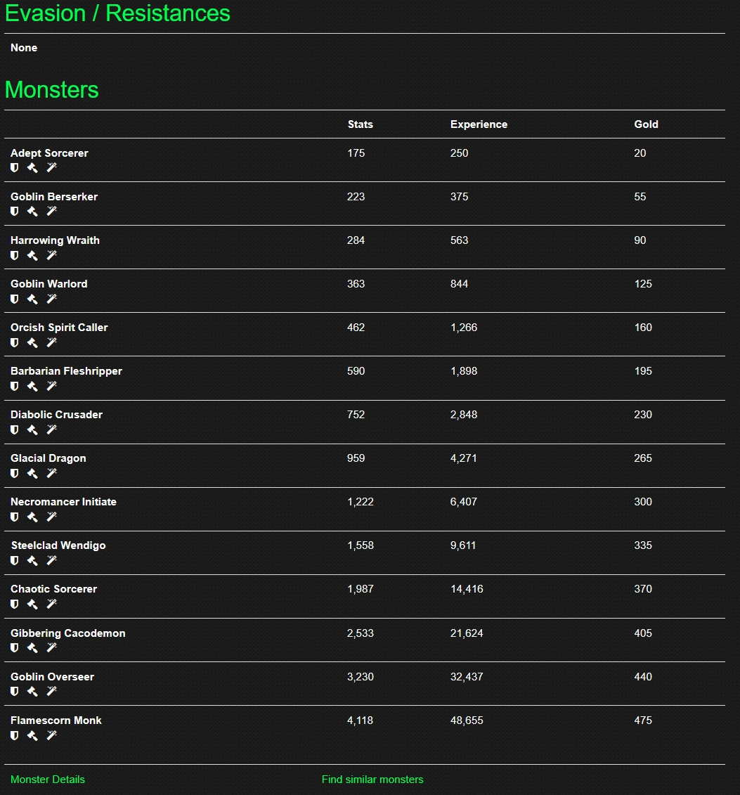

Zones are locations in the game to progress your character. Each zone is tagged with a specialization: Exp, Gold, Gem, Shadow, Mastery, or None.
Starting Zones
Nine races begin in different locations: Ankhgora, Asbarun, Darkmoor, Jagan, Nar Hob, New Haven, Palaor, Silverdale, and Torogaar.
Zone Mechanics


The Wilderness functions as a primary hub and "the biggest zone in the game, which is displayed in a grid." Each icon on the map represents another place to interact with, be it an interaction with a NPC or a portal to another zone.
Zone Information


Zones display the following details:
- Zone Type (specialization category)
- Location coordinates and access requirements
- Minimum level needed for entry
- Base EQ (monster power level)
- Available shops for weapons, spells, or armor
- Obtainable drops and gem grades
- Shadow gear and purse drop availability
- Resource accessibility
Resources and Drops
Nine resources exist: Lumber, Stone, Clay, Sand, Iron, Marble, Fusion Pieces, Silver, and Gold. Primary resources support Conquests and Estate development. Marble is used for enchanting your accessory in the late-game, and Fusion Pieces upgrade Mythic and Ancestral gear.
Navigation Tools
Two utilities are mentioned: Monster Details and Find Similar Monsters, each providing detailed comparative tables to help players navigate what they can kill more efficiently. Monsters scale in difficulty throughout each zone.
In-game, use the /zone [zone name] and /zoneres commands to look up the full zone and monster lists.